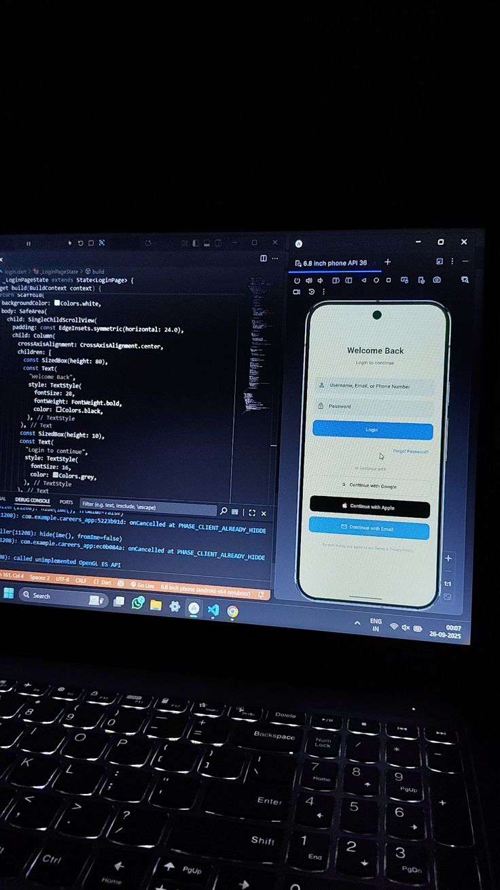
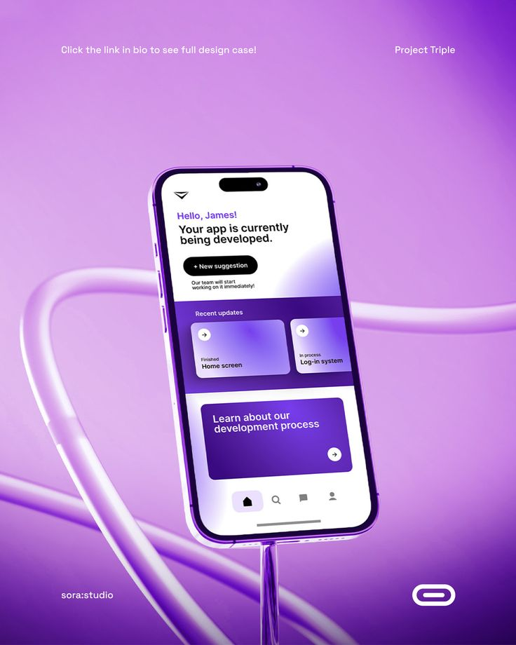
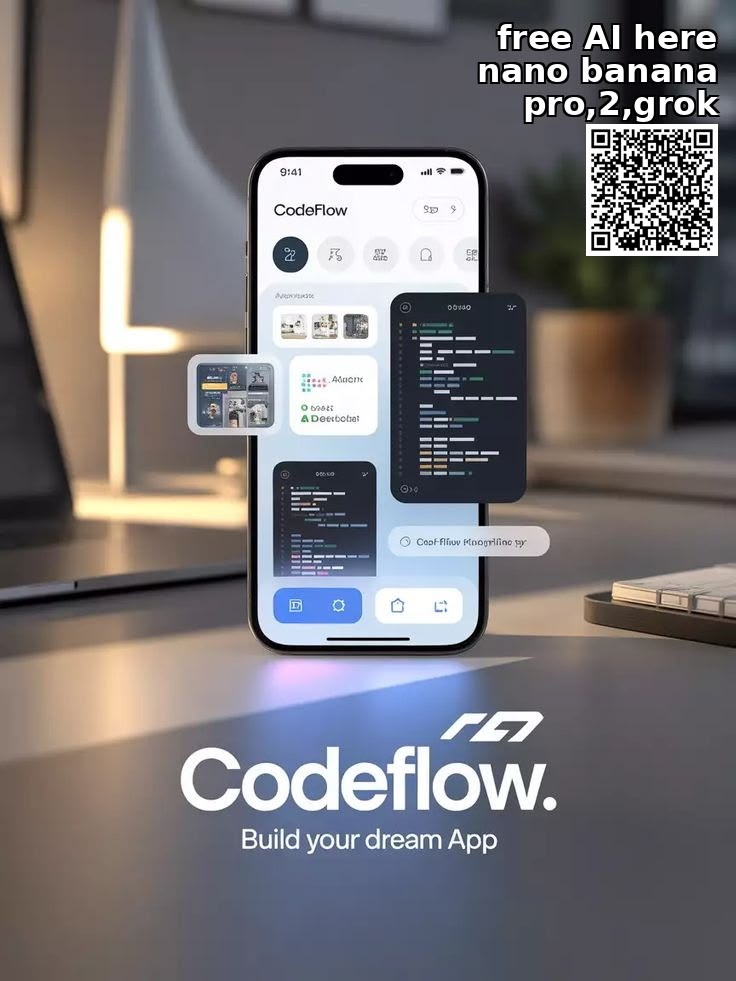

my calendar is currently a warzone.
i recently started a remote six-month mobile development internship with UpSide. we had to do some serious negotiating regarding the remote status and the internet allowance because data costs out here will eat your margins alive if you aren't careful. on top of that, i'm the full-time in-house dev at code campus for the styclick project, handling the frontend implementation and ensuring the user flows don't break under load.
and because i apparently don't know how to rest, we are pitching aumen — our ai-powered productivity app — at the nile university startup competition 6.0 in a few days. plus i'm still architecting bloodline, the software supply chain contagion mapper. i am actively testing the absolute upper limits of how much code one person can write in a single week without losing their mind.




my IDE is constantly open, my terminal is a steady stream of logs, and my coffee intake is getting slightly concerning. the styclick work is frontend-heavy, which is a different kind of thinking from the arguuu backend work. switching contexts between them requires a deliberate gear shift that i haven't fully systematized yet.
the UpSide internship is remote which is both a blessing and a specific kind of discipline challenge. nobody is watching whether you're actually working. the accountability is entirely internal. which, as it turns out, is either exactly my kind of environment or a very fast route to chaos. i'm finding it's mostly the former.
we'll see if this semester breaks me. but for now, the compiles are passing.
← Back to Blog